Mark Ambor
Live
Overview
Mark Ambor plays three songs live at Power Station: Everyone's Invited, Tomorrow and Crumbs.
Production design: homey, built from the art we already have for the small run of live shows. A flag backdrop, a chair, carpets and lamps.
Lighting: warm, soft top light coming from above. Lamps and other practicals add small splashes of light around the room. We never see the film lights, only the practicals.
One camera on an Easyrig for a smooth handheld feel. No crowd.
Everyone's Invited is standing and active. Tomorrow and Crumbs are seated. In all three, Mark is part of the circle with the band.
Mark's world
Artist assets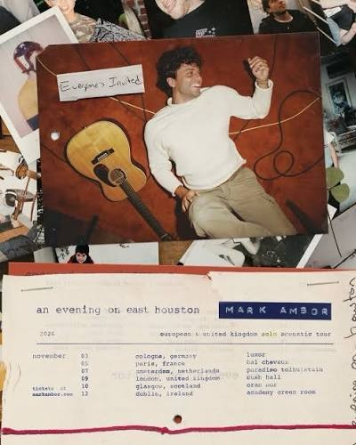
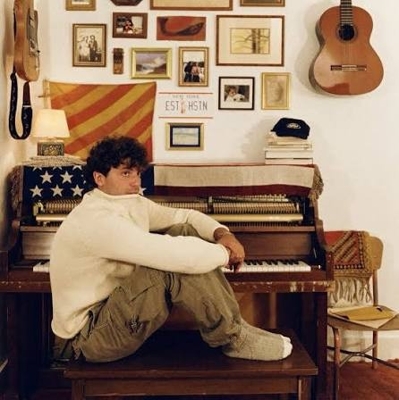
Lived-in apartment: upright piano, acoustic guitars, framed photos, flags and rugs. Cream sweater, olive cargos.
The look
Reference stillsThe room
A warm, lived-in room with Mark and the band in a loose circle. Framed pictures, rugs, practical lamps.
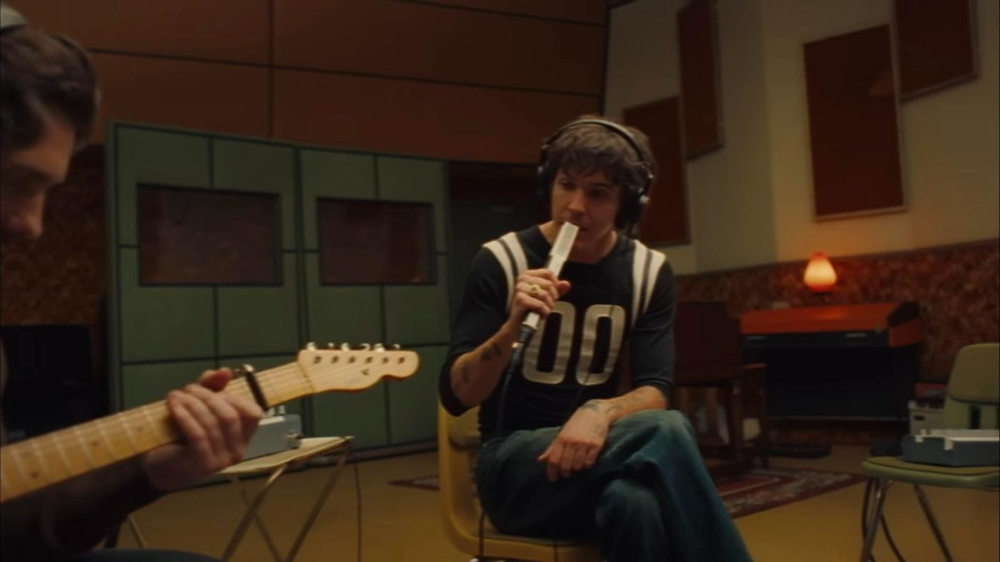
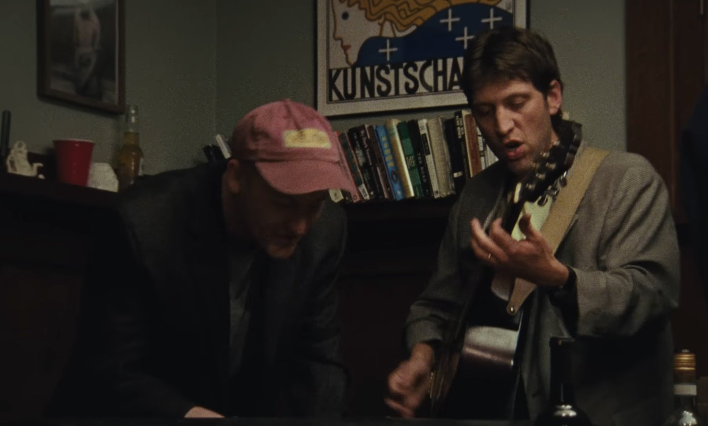
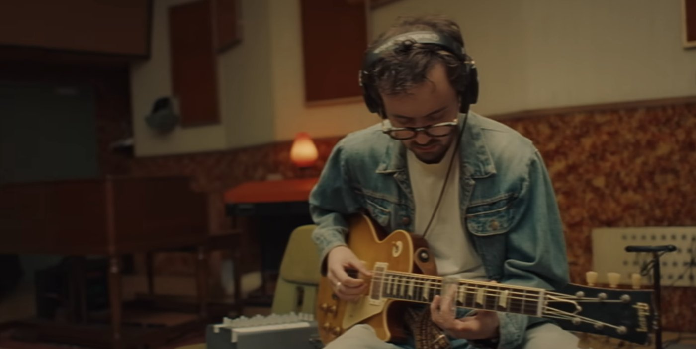
Close on Mark
Tight on the face at the mic. Backlight through the hair, haze, flares.
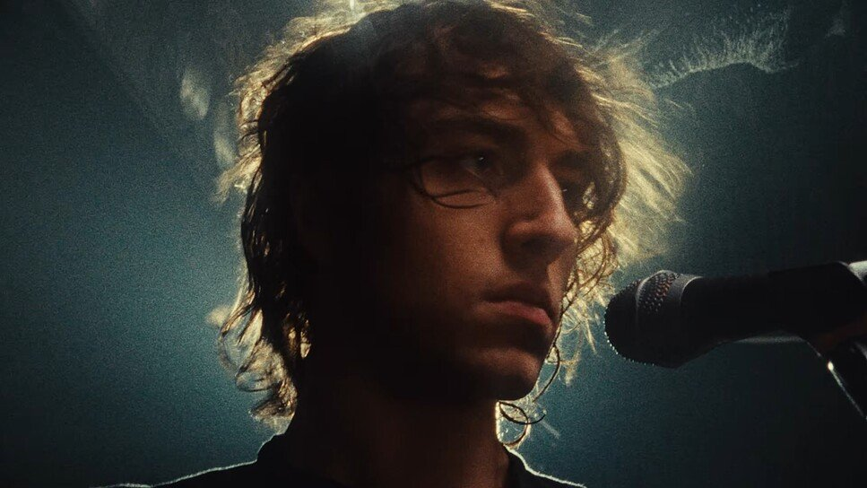
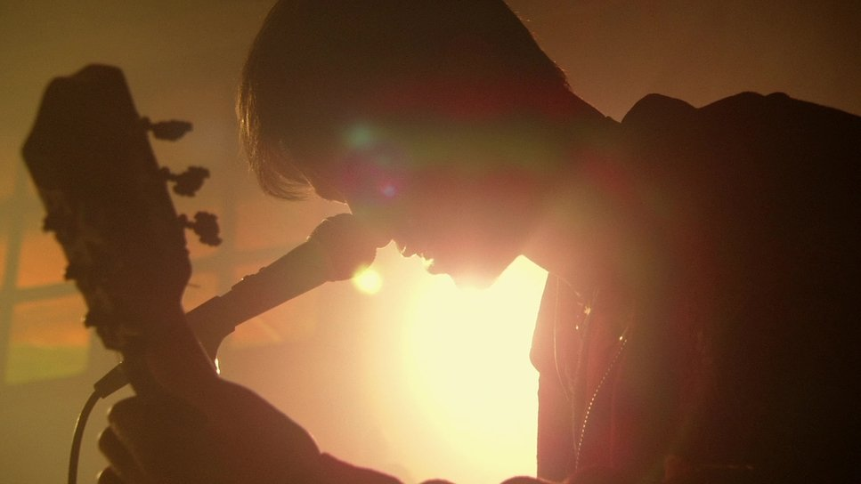
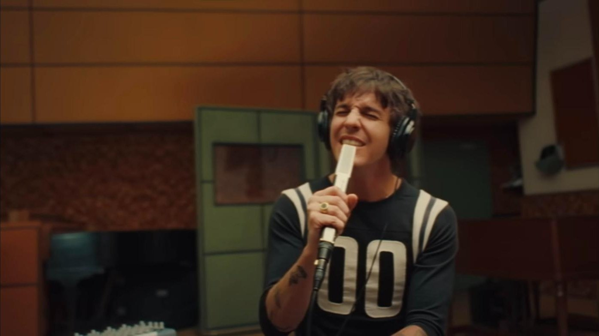
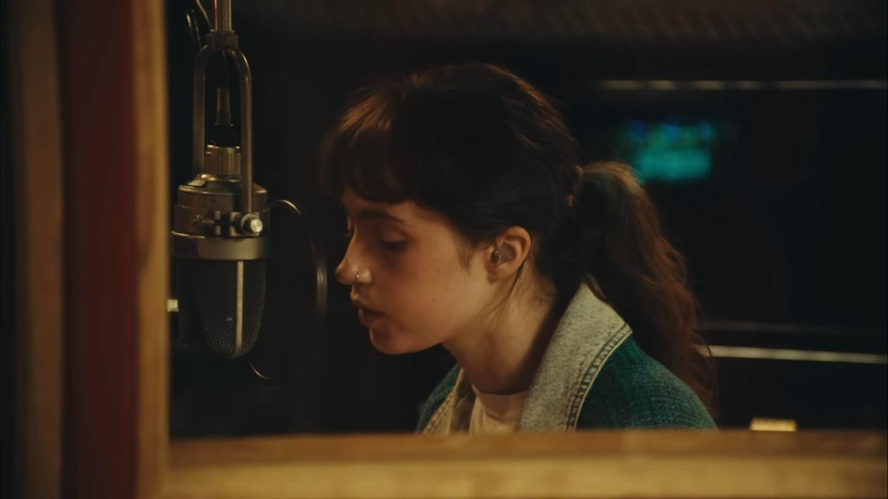
The band
Over the shoulder through the players. No crowd: just Mark and the band in the room.
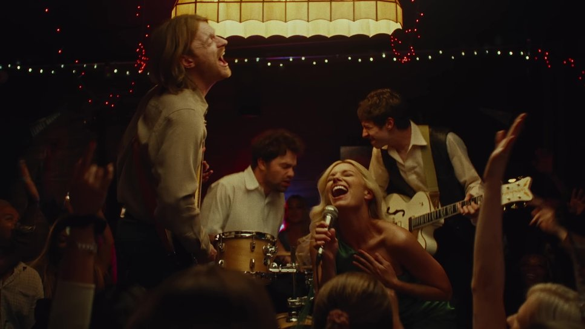
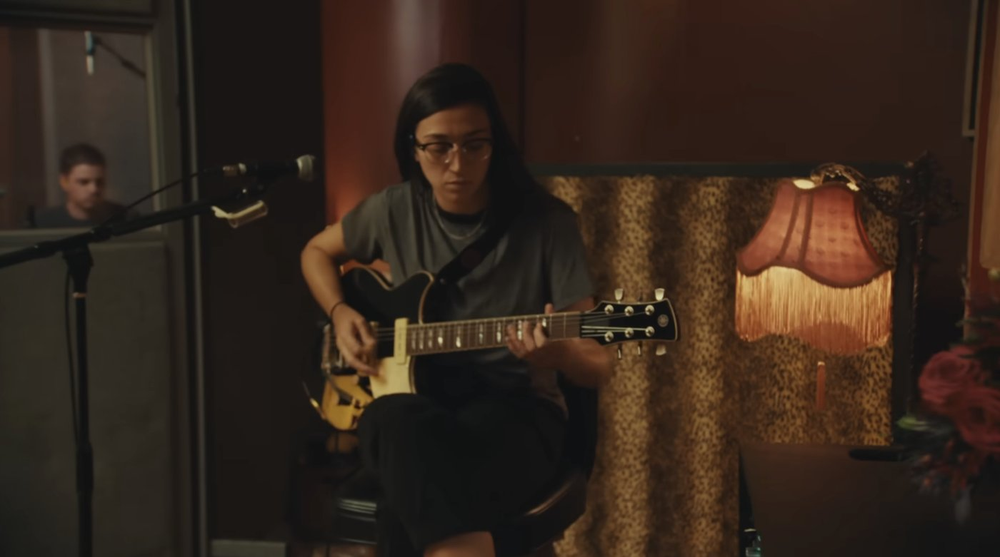
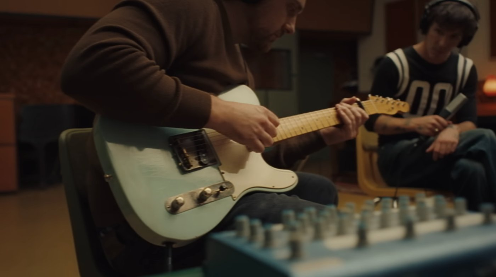
The songs
Everyone's Invited
Standing · Animated · Active camera
Everyone's Invited is the up one. Mark stands and moves around the room.
- Intro
- Open close on the guitar. On the "hey," when the drums kick in, whip over to Mark.
- Mark
- Standing, animated, moving around a little.
- Band
- In the circle with Mark, with room for him to move.
- Camera
- More active. Follows Mark as he moves.
- Dropout, 1:55
- The band drops out and it's just vocals and claps. Tight on Mark. Mark or the band can clap.
- Notes
- This one should feel the most like a party of the three.
Tomorrow
Seated · In the circle with the band · Roaming camera
Tomorrow is a seated performance. Mark sits in the circle with the band.
- Intro
- Just Mark and his guitar under a single spotlight. The rest of the room stays dark.
- Lighting cue
- When the drums kick in, around 0:30, more lights come up and the whole room gets brighter. That's when we see the band.
- Guitar solo
- Close up on the guitar.
- Ending
- Back to the spotlight look. Just Mark, with the room dimmer around him.
- Mark
- Seated.
- Band
- In the circle with Mark, close together.
- Camera
- Moves around the circle on the Easyrig, picking up one shots and two shots of the band.
- Notes
- A more intimate moment. Tighter shots, longer lens.
Crumbs
Seated · In the circle with the band · Wider camera
Crumbs is seated like Tomorrow, with Mark in the circle with the band.
- Mark
- Seated.
- Band
- In the circle with Mark, close together.
- Camera
- Stays more on the outside of the circle, capturing the whole scene a little wider.
- Notes
- Wider than Tomorrow. We see the whole circle more often.